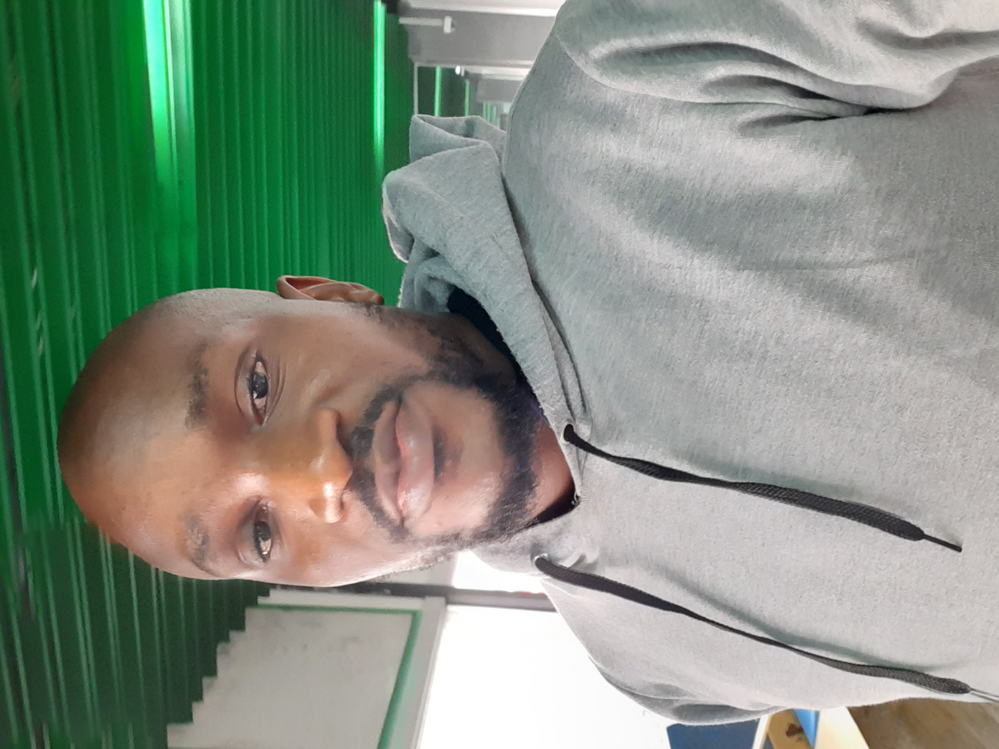

Ferdinand Chibunna Ezeaniekwe

Summary
I am a graduate of Information Management Technology with love and
experience in web developmemt, very eager to learn and determined
to carry out any task and solve them.
Education
- Bachelor of Technology, Information Management Technology-
Federal University of Technology, Owerri ( 2009-2014)
- Secondary School Leaving Certificate, St Charles Special Science College
(2004-2007)
- First School Leaving Certificate, Faith Nursery and Primary School Kano
(1996-2000)
Work Experience
-
Ecommerce IT Support- Ferdicon Mobile Concept Enterprise
October 2014- Dec 2023
- Design and developement of Ecommerce using Shopify or Wordpress Theme.
- Using Apps or Plugins to Improve the functionality of the Website.
- Integrating Payment processors like Paystack and Flutterwave.
- Importing Products via Excel.
- Hosting and creating webmails for staff.
- General Support of the Ecommerce website.
Internship- NNPC Limited
April 2011-Jan 2012
- Recording all sales made in the depot via MS Access Database.
- Querying the Database to rtrive records.
- Month generation of report from the Database.
Skills
- Cummication:⭐️⭐️⭐️⭐️⭐️
- Creative: ⭐️⭐️⭐️
- Analytical: ⭐️⭐️⭐️⭐️
- Organization: ⭐️⭐️⭐️⭐️⭐️
Awards and Certifications
- Dean Academic Honor's List
- Member Computer Professional of Nigeria
Other